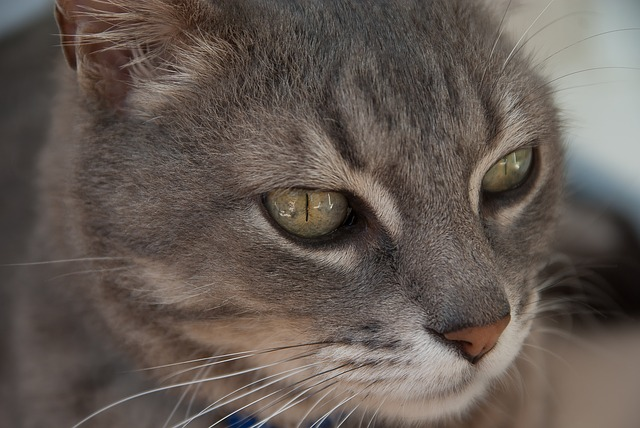

Alimentação
É preciso considerar, entre outras coisas, a idade do animal de estimação, tamanho, raça e quaisquer problemas de saúde existentes
Sinais
O ronronar pode na maioria das vezes indicar total felicidade e satisfação, e em alguns poucos casos, insatisfação

Olhos
Nos gatos, os músculos da íris são feitos de maneira que se contraem na vertical, formando uma fenda